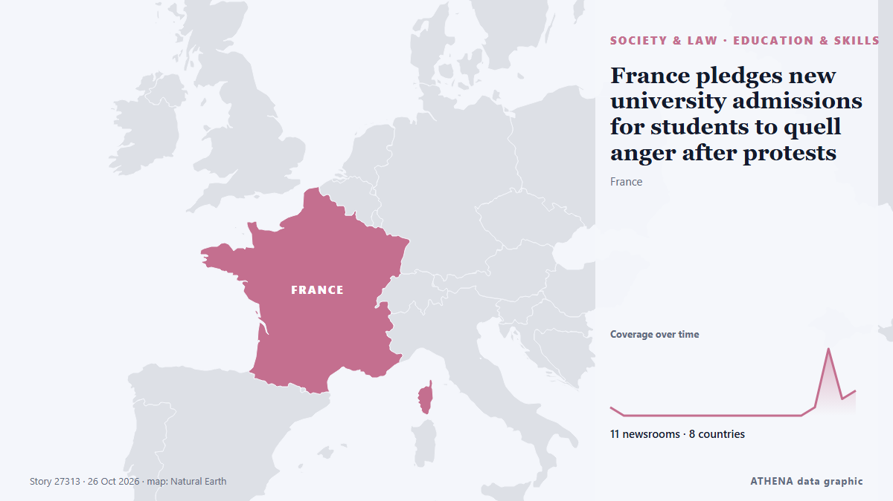

France pledges new university admissions for students to quell anger after protests

France’s government has pledged to replace its national online university admissions platform in 2028. из ABC News (International)
Независимые источники: 11 изданий в 8 странах, с 24 окт.; первым сообщил France 24 English; освещение продолжает расти. ATHENA оценивает риск как повышенный (4.8/10), прежде всего из-за тяжести описываемого ущерба и географического и отраслевого охвата. Уверенность — 88 % (высокая); подтверждают независимые источники: 11 изданий, средняя надёжность источников — 78 %. Кто сообщал: 4 СМИ в стране Франция · France, 3 СМИ в стране Соединенные Штаты · United States, 1 СМИ в стране Оман · Oman. Освещение шло с 24 окт. по 26 окт., 57 ч.
Почему это важно: Правовые и политические изменения меняют права, обязанности и государственные услуги для затронутых людей.
Что изменилось: 14 новых сообщений от 11 редакций за 24 часа до 26 окт..
Заголовки приводятся на английском языке, как они были опубликованы.
Коротко в цифрах
Отобрано, оценено и написано по опубликованной методологии ATHENA. Ни один редактор не вмешивается в отдельные события. Как это создаётся ›
| 24 Oct 11:41 UTC | 1 |
|---|---|
| 24 Oct 14:41 UTC | 0 |
| 24 Oct 17:41 UTC | 0 |
| 24 Oct 20:41 UTC | 0 |
| 24 Oct 23:41 UTC | 0 |
| 25 Oct 02:41 UTC | 0 |
| 25 Oct 05:41 UTC | 0 |
| 25 Oct 08:41 UTC | 0 |
| 25 Oct 11:41 UTC | 0 |
| 25 Oct 14:41 UTC | 0 |
| 25 Oct 17:41 UTC | 0 |
| 25 Oct 20:41 UTC | 0 |
| 25 Oct 23:41 UTC | 0 |
| 26 Oct 02:41 UTC | 0 |
| 26 Oct 05:41 UTC | 0 |
| 26 Oct 08:41 UTC | 1 |
| 26 Oct 11:41 UTC | 8 |
| 26 Oct 14:41 UTC | 2 |
| 26 Oct 17:41 UTC | 3 |
| 24 Oct 12:55 UTC | 1.1 |
|---|---|
| 26 Oct 13:00 UTC | 3.2 |
| 26 Oct 13:54 UTC | 4.1 |
| 26 Oct 20:32 UTC | 4.8 |
Откуда эти цифры
Значимость
Риск
Уверенность
Освещение — кто сообщил и когда
заголовок в оригинале · открывает источник- France 24 English · Франция · FranceFrance: Young demonstrators demand concrete action from Macron
- Oman Observer · Оман · OmanFrance's Macron promises 'strong measures' to assuage protests
- France 24 English · Франция · FranceMacron vows ‘concrete’ measures to address student demands after unrest
- France 24 English · Франция · FranceLive: French student representatives hail ‘concrete measures’, call for protests to continue
- The Korea Times · Республика Корея · South KoreaFrance's Macron promises 'strong measures' to assuage protests
- DW English · Германия · GermanyMacron vows 'strong measures' to combat protests that rocked France
- ABC News (International) · Соединенные Штаты · United StatesFrance pledges new university admissions for students to quell anger after protests
- The New Arab · INTMacron promises 'concrete measures' to French students' demands
- France 24 English · Франция · FranceMacron promises 'concrete measures' in response to French students' demands
- Sky News (World) · Великобритания · United KingdomMacron promises 'concrete measures' over protest demands - amid fears of Halloween unrest
- Breaking Belize News · Белиз · BelizeInternational News: French President pledges more measures as unrest continue
- Times of India · Индия · India‘Concrete measures’: Macron seeks to quell France’s student unrest
- Fortune · Соединенные Штаты · United StatesFrance has a plan to calm furious students. There’s just one catch: Macron won’t be president when it happens
- PBS NewsHour · Соединенные Штаты · United StatesFrance pledges new university admissions to quell student anger. But only after Macron leaves office